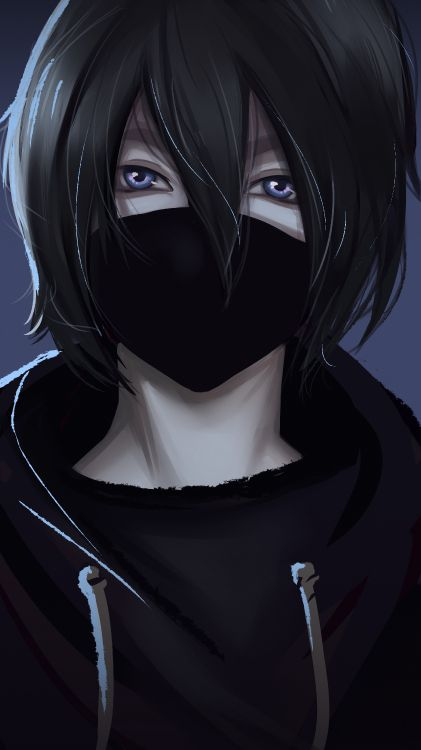
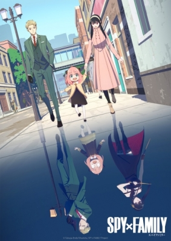

У вас ещё нет аккаунта? Тогда создай его!
Здесь моглы быть ваша реклама!
Арты наших фанатов

Ссылка на нашу группу: vk/1212ewwqe2
САМЫЕ ПРОСМАТРИВАЕМЫЕ АНИМЕ
Название: Наруто угарные хроники
Год выхода: 2007
Жанр: приключения, фэнтези
Количество серий: 500 (25 мин.)
Описание: Прошло не мало времени после того как Джирая-сэнсэй взял юного Наруто под свое крыло.
На целых два года они покинули родную деревню. Джирая-сэнсэй собирал различную информацию об Акацуке, а так же создавал свой новый роман.
Наруто совершенствовался как ниндзя, углубляясь в изучение нинджутсу и тайджутсу. Теперь они возвращаются в деревню, к близким друзьям. В деревни тоже все поменялось.
Лицо бабули Цунаде высекли на склоне горы, так как она была пятой хокагэ. Все одноклассники Наруто стали отличными шиноби и уже давно...
Название: Перерождение ассасина
Год выхода: 2021
Жанр: приключения, фэнтези
Количество серий: 12 (25 мин.)
Описание: Профессиональная реализация выступает едва ли не одним из важнейших аспектов в жизни человека.
Нередко она становится тяжким испытанием, а порой и вовсе непосильной ношей.
Одному человеку приходится столкнуться не просто с профессиональным выгоранием, а полнейшим опустошением от деятельности, которой посвятил сознательную жизнь.
Он был прирожденным убийцей и его, как ассасина нещадно эксплуатировали хозяева. Он немалое количество людей отправил на тот свет, и в один момент решил остановиться.
Он не смел рассчитывать на...
НАЗВАНИЕ: Госпожа Кагуя: в любви как на войне
Год выхода: 2007
Жанр: приключения, боевые искусства, сёнэн
Количество серий: 500 (25 мин.)
Описание: Первенство для подростков крайне важно.
Оно дает уважение среди сверстников и придает ещё большей привлекательности в глазах противоположного пола. Для ребят, по своему уровню интеллекта относящегося к разряду гениев снискать признание не так уж сложно.
Но это только кажется, что после обозначения гения к его ногам падут почитатели и любовь нагрянет безо всяких усилий.
В Академии Сюити, считавшейся...

нАЗВАНИЕ: сЕМЬЯ ШПИОНОВ
Год выхода: 2022
Жанр: сёнэн, комедия
Количество серий: 12+ (25 мин.)
Описание: Шпион, носивший позывной «Сумрак» и прослывший гениальностью и хладнокровием, привык исполнять порученные ему задания,
безукоризненно и не создавая шума. Ему нравилась его работа, ведь с юных лет он грезил о том, чтобы мир стал намного лучше, а без персонального участия этого не добиться.
Безо всякого страха он брался за опасные задания, не опасаясь распрощаться с жизнью. В очередной раз ему дают серьезное задание, но требуется выполнить ряд условий, а они достаточно специфичны.
От шпиона требуется завести семью и быть заботливым...